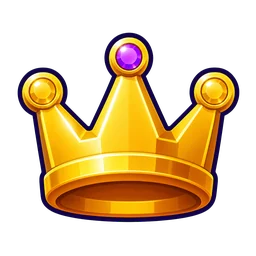
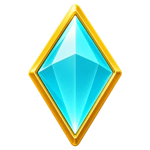
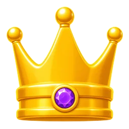
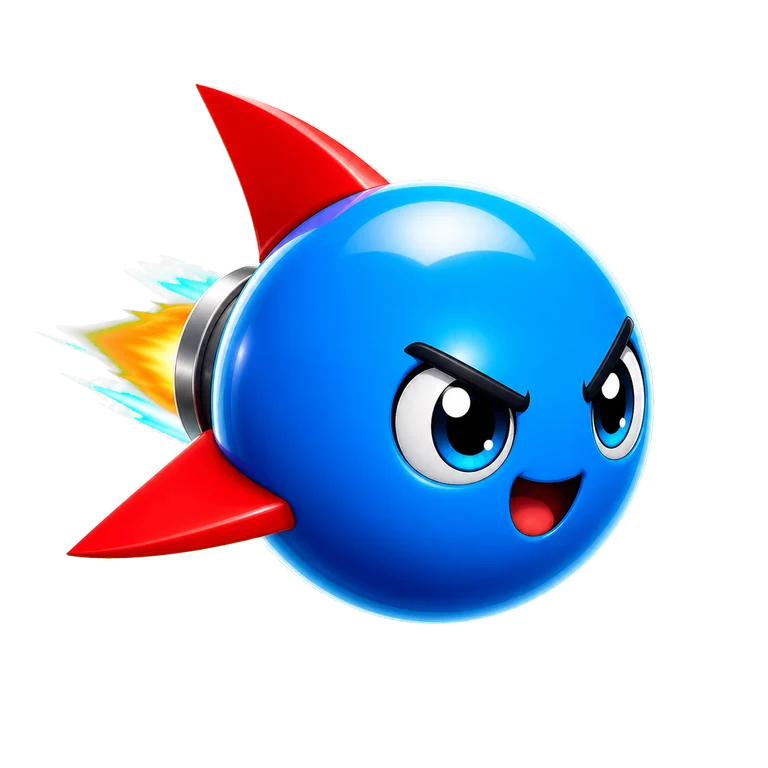

1
NIVEL
 0
0 0
0 0Total
0Total NoticiasRanking
NoticiasRanking Amigos
Amigos
 Club
Club🚀 Cohete
🏆 0

PASE DE TEMPORADA
🏁
LA GRAN CARRERA
DÍA · +50%
MODOS
🚦
LUZ ROJA
Corre y frena

🏁
LA GRAN CARRERA
Llega el primero

🎯
EL CAZADOR
Huye del monstruo

RECOLECTA
Recoge más gemas

PRÓXIMAMENTE
SUELO MENGUANTE
Sobrevive al suelo

PRÓXIMAMENTE
Ranking Franjas de premio · Top 10% y Top 1% · próximamente
Franjas de premio · Top 10% y Top 1% · próximamenteSUPER

Campeón
—
Tu puesto
1º
0
Cohete
Copas
+0
Monedas
1
Nivel
Clasificación
Garaje
00Bolas
Nivel de bola
Tienda
00Temporada
00Temporada 1
Verano en la Cima
Retos
Retos nuevos mañana
Liga
—
Bronce
Plata
Oro

Diamante
ÉlitePase de Batallapronto
Peldaño 12 / 50
Vía gratisVía premium
Rankings
1
Estela
3 420
2
Trompo
3 180
3
Tú
2 960
4
Bumper
2 610
Perfil
00Jugador
Nivel 1 · alias
Perfil privado
1
Bolas
0
Trofeos
0
Victorias
Amigospronto
Tu código:BT-7Q4K2
+
+
+
Invita y gana
Emoteslista cerrada
Tu cuenta
Estás jugando como invitado
Llevar mi partida a otro móvil
BT-••••-••••
Este dispositivo
Nombre—
Tu ID de jugador—
Exportar progreso
Importar progreso
Salir en el canal
Compra con dinero real
Resuelve:

Ajustes